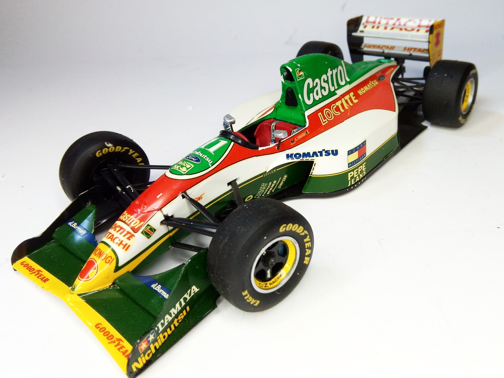
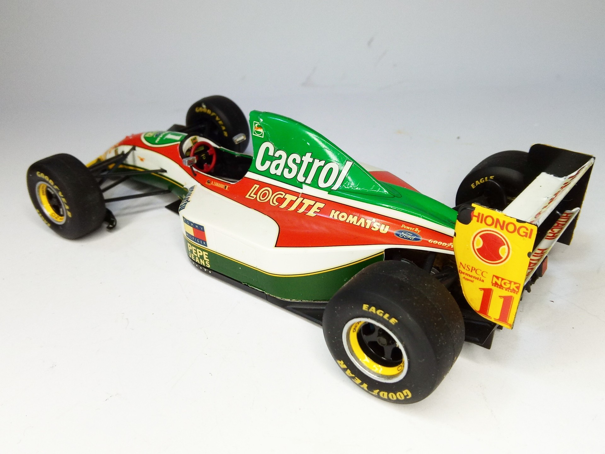

Auto e veicoli stradali · scale model archive
Lotus Ford 107B F1
Lotus Ford 107B F1 — Kit: Tamiya, Scale: 1/20. As raced in F1 Championship 1993 #1/20 #Tamiya #Lotus107B

Photo gallery

English description
As raced in F1 Championship 1993
#1/20 #Tamiya #Lotus107B
Descrizione italiana
Come corse nel Campionato di Formula 1 1993.